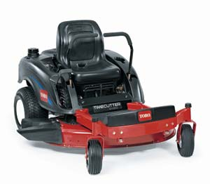
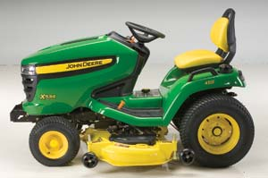

Using a machine perfectly suited to its task gives a certain special pleasure. For my first 35 years of mowing lawns, I never felt that pleasure. Every riding mower I used was clumsy, frustratingly slow and occasionally dangerous. Then I rode a zero-turn mower.
Today’s zero-turn mower is based on an ingenious steering mechanism that controls the direction of travel by operating the rear wheels with two small hydrostatic transmissions. The wheels can be driven in the same direction at varying speeds to make a gradual, precise turn, or they can turn in opposite directions, causing the zero-turn mower to spin, literally, on a dime.
If you’re accustomed to a lawn tractor, the zero-turn mower’s wonderful nimble handling may be a little unnerving at first. Some zero-turn mowers have two big handles in front of the driver, controlling the forward-backward motion of the rear tires. Others have various one-hand control options, most of them operating on the same principle. A few models of zero-turn mowers use a joystick to control the direction and speed of travel. All of them change direction very quickly. And because they operate at higher speeds than most lawn tractors or conventional riding lawn mowers, you’ll definitely want to practice on an empty stretch of lawn before you take a zero-turn mower along the flower bed.
Once you’ve got a feel for it, though, the zero-turn mower will take you as close to the flower bed as you’ve ever gone with a mowing machine. You’ll probably save 15 percent to 45 percent of your mowing time, thanks to the machine’s speed and maneuverability. And if you’re a neat-nik, it may even eliminate the need to trim. The zero-turns we tested were far easier to control in a tight space, once we got used to them.
You’ll find lots of different zero-turn mowers to choose from, wherever you live. Zero-turn mowers generally cost anywhere from $3,000 up to $10,000 for a commercial-grade model. A hefty price - but a worthwhile investment for those who maintain large, high-maintenance lawns.
As with many machines, one of the first decisions you’ll have to make regards horsepower. Most zero-turn mowers have typical lawn mower engines in the 18 to 25 horsepower range. We’ve always been very skeptical of these ratings. To us, it seemed like the 18 horsepower model from one manufacturer performed a lot like the 25 horsepower model from another. We recommend finding a few experienced, trustworthy dealers and getting their recommendations. Often, models with larger motors also will have nifty add-on features.
Sometimes the upgrades are mystifying, though. Some manufacturers offer larger models with “commercial” features. Before paying a lot of money for these features, consider what you wear out on your mowers. It’s likely that you’ll wear out several mower decks before you need to replace much else. So, whereas a heavier deck might be a good investment, larger wheels might never make a difference for the average owner.
Some manufacturers offer heavier decks with certain models, but watch the price tag. One mower we tested gave buyers the option of a heavier deck, but the upgrade price was three times the cost of a replacement for the lighter deck. We figured we could thoroughly wear out the whole mower in the time it would take us to go through three decks.
Watch for what is called a “washout port” on the mower deck to help you remove residue after use. It’s a great feature that allows you to hook up a garden hose and spray out the clippings. But don’t forget to dry the deck every time, or it will rust - quickly.
The biggest decision related to the purchase of a zero-turn mower is probably the placement of the mower deck. Some favor center-mounted mowing decks in which the blades turn directly below the operator. It’s similar to the position on a conventional riding mower. Some zero-turn mowers, though, have front-mounted decks that allow the operator to watch exactly where the mower blades are going without craning or leaning. Even better, front-mounted decks can mow under shrubbery, fences or other obstacles.
Most of the zero-turn mowers built for homeowners have belt-driven blades like conventional riding lawn mowers, and most of them are pretty reliable if you replace the belts regularly. The person who wants a bulletproof unit can always go for a commercial, gear-driven machine, but that choice will cost more.
Over the course of a lawn mower’s lifetime, you spend a lot of time in physical contact with it. There’s no substitute for a zero-turn mower that just feels right. Naturally, opinions will differ on this, so you should try to spend some time actually mowing on a variety of zero-turn mowers before you make your final decision.
Don’t forget to test them on the kind of terrain where they will be used. Zero-turn mowers are particularly useful on sloping land, where you’ll appreciate their low centers of gravity. Some models cover the terrain more smoothly than others, and some seats are much more comfortable over the bumps. If your land is rough, you might want to consider a model with heavier running gear.
And while you’re testing the models in your area, spend some time with the dealers. We’re firm believers that you should choose your manufacturer based on your dealer. Every mower needs repair. Every owner needs replacement parts. If your local dealer is cordial and trustworthy, you’ll have a happier life with your new mower.
If you'd like to delve deeper into the world of zero-turn mowers, here's a list of manufacturers to get you started:
|
ARIENS COMPANY The Ariens 1534 zero-turn mower replaces the Ariens 1540, which Consumer Reports’ Greener Choices found to have very good mulching ability. |
LAWN-BOY The Lawn-Boy Precision 81245 zero-turn mower earned one of the top five overall scores from Consumer Reports’ Greener Choices. |
 COPYRIGHT © 2003 THE TORO COMPANY The Toro Timecutter zero-turn mower was found by Consumer Reports’ Greener Choices to have excellent mulching ability, which can aid in natural lawn fertilization. |
|
 IMRE COMMUNICATIONS “Garden tractors,” like this John Deere X534, perform tough jobs that a regular “lawn tractor” can’t handle. |
CHARLES HIGGINSON This Cub Cadet mowed Editor in Chief Cheryl Long’s wooded lot and meadow quickly and effortlessly. |
|